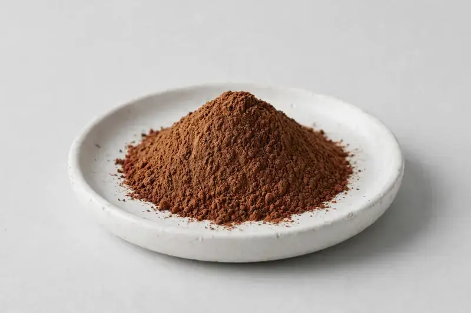

Punica granatum — a clinically referenced polyphenol source positioned around antioxidant and beauty-from-within formulations.

Overview
Pomegranate extract is derived from the fruit peel of Punica granatum and carries punicalagins and ellagic acid as its headline markers. Demand keeps building in beauty-from-within and antioxidant-positioned supplements, where formulators want a consistent marker profile rather than raw fruit powder. As a Xi'an-based trading company, we source through vetted partner producers and match your target specification before quoting.
Specifications below reflect commonly requested options in the market — not a stock list. Share your target spec and we'll confirm exactly what we can supply, honestly.
| Specification | Details |
|---|---|
| Botanical identity | Punica granatum, fruit peel |
| Marker compound | Punicalagins — commonly requested: 20-40% (HPLC); ellagic acid — commonly requested: 40-90% (HPLC) |
| Appearance | Fine powder, color typical of the extract |
| Mesh size | Typically 80–100 mesh (confirm per inquiry) |
| Testing | COA/TDS arranged on request; scope agreed per your spec |
Applications
Documentation
We don't claim in-house labs or certifications we don't hold. COA and TDS documents can be arranged on request, and testing scope is agreed against your specification before supply.
FAQ
Related products
Withania somnifera
Key marker: Withanolides
View specs →Rhodiola rosea
Key marker: Rosavins & Salidroside
View specs →Silybum marianum
Key marker: Silymarin
View specs →Garcinia mangostana
Key marker: Xanthones
View specs →Camellia sinensis
Key marker: Whole-leaf matcha
View specs →Send your target spec and volumes — we'll respond with a tailored quotation.
Request a Quote